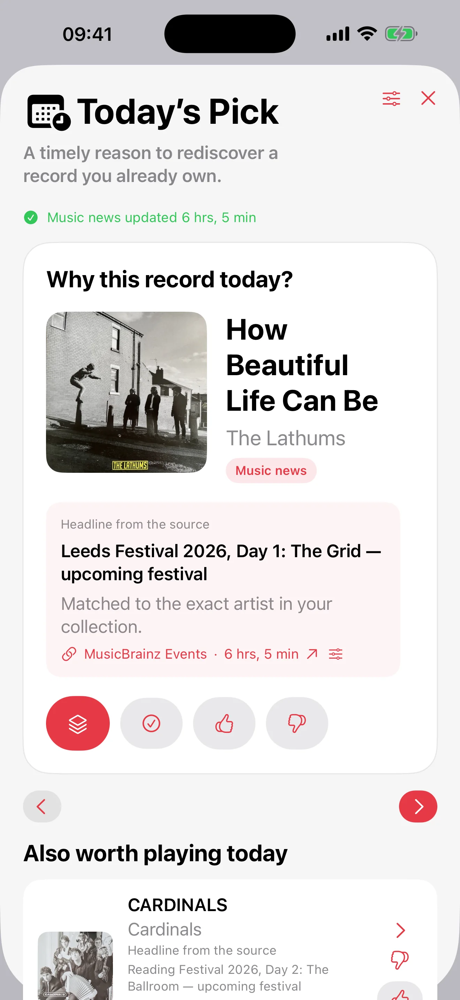

Customizable Random Pick
Choose a purely random pick or optionally favor less-played records, then apply filters and exclusions before picking or undoing.
Play the right record
Catalog your vinyl and CDs, then choose the next record with customizable Random Pick, Mood Pick, or Today’s Pick. Your collection stays private, can sync through iCloud across iPhone, iPad, and Mac, and is also available on Apple Watch.

Available now
Record Picker 2.2 makes importing, cataloging and rediscovering your collection more precise.
Record Picker
Record Picker catalogs vinyl, CDs, and favorite albums, then suggests the next record to play based on filters, favorites, exclusions, and the mood of the moment.
 Sees The Light (2012)La Sera
Sees The Light (2012)La SeraChoose a purely random pick or optionally favor less-played records, then apply filters and exclusions before picking or undoing.
Barcode scan, MusicBrainz, Discogs fallback, custom covers, duplicates, exclusions, wishlist, and browsable history stay easy to manage.
Cover on the left, full metadata on the right, centered Pick button, and floating toolbar for frictionless choosing.
A red star replaces the Favorite chip in the crate: one tap on iPhone or iPad is enough to mark or unmark.
Record Picker has no user account, no advertising, no data selling, and no Record Picker server storing the collection.
#RecordPickerChallenge · until 22 August · 70 Pro codes to win
Record Picker is free for collections of up to 100 records. Five participants win Lifetime Pro every day.
No purchase, App Store rating or review is required. Read the rules for eligibility and selection details.


Vinyl guides
Three focused guides answer common collector questions: what to play now, how to use a useful random picker, and how to keep a collection alive.
Vinyl guide
A practical guide to choosing what vinyl record to play next without staring at the shelf for too long.
Random picker
Why a random vinyl record picker works best when it respects filters, favorites, exclusions, and listening context.
Vinyl collection
A practical guide to cataloging, enriching, backing up, and rediscovering a vinyl collection with Record Picker.
For questions about the app, import, backups, or privacy, use the public support contact.